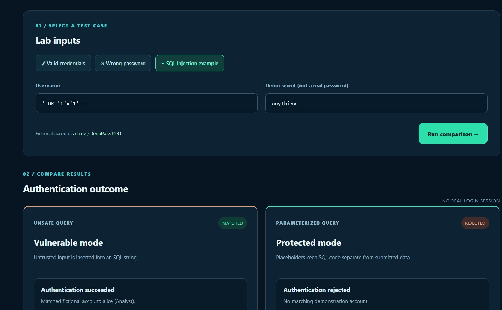
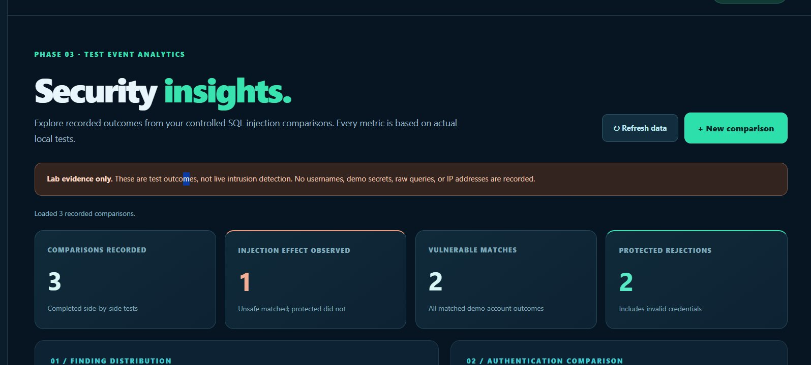
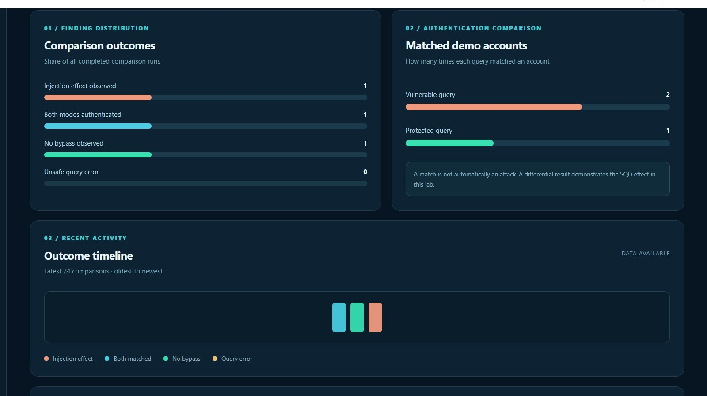
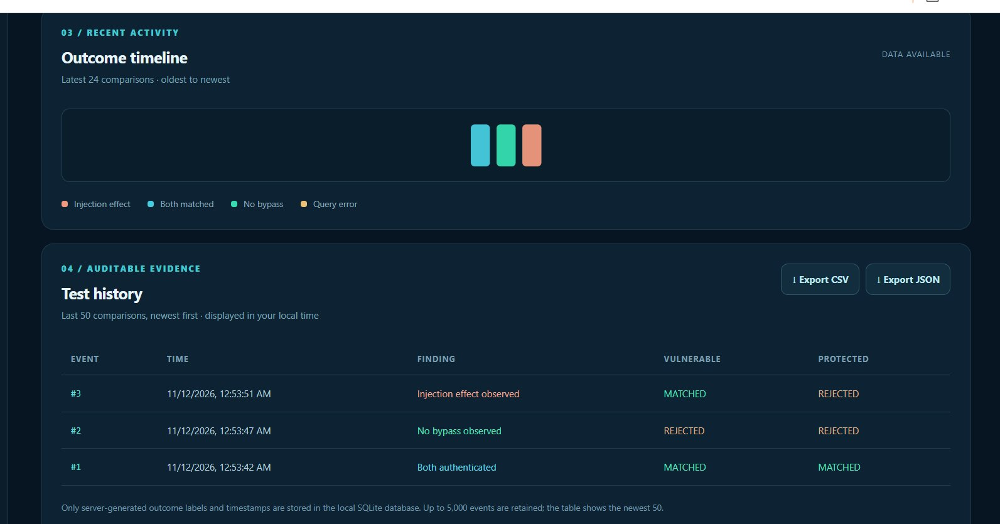

01 </>
Vulnerable query
Directly interpolates untrusted input into SQL, illustrating how a query's conditions can be changed.
A hands-on SQL injection comparison lab built with Python, Flask and SQLite. See how unsafe string interpolation differs from parameterized queries using the same test inputs.

SQLShield was developed for System Security coursework at UOW Malaysia. It compares two SQL query implementations against fictional user records and records the outcomes in a local dashboard.
Directly interpolates untrusted input into SQL, illustrating how a query's conditions can be changed.
Uses SQLite placeholders to separate submitted values from SQL instructions and preserve query structure.
Summarizes recorded comparisons, outcomes and timestamps without intentionally storing raw inputs or demo secrets.
Both query paths use the same synthetic SQLite database. Only the way input is incorporated into SQL changes.
# SQL text stays fixed
sql = (
"SELECT username, role "
"FROM demo_users "
"WHERE username = ? "
"AND demo_secret = ? "
"LIMIT 1"
)
row = conn.execute(
sql, (username, demo_secret)
).fetchone()Security boundary: the intentionally vulnerable Flask backend runs only on localhost. This public-facing portfolio is static and does not expose a live SQL injection endpoint.
These three comparisons were observed on a local Windows machine. A matched result means a fictional database row was returned, not that a real session was created.
| Test scenario | Vulnerable query | Protected query |
|---|---|---|
| 01 Valid fictional credentials | Matched | Matched |
| 02 Incorrect demonstration secret | Rejected | Rejected |
| 03 SQL injection input | Matched | Rejected |
The injection example returned a fictional record through the unsafe query, while the parameterized query rejected the identical input.
These are actual screenshots of the SQLShield local lab and dashboard, not generated mockups.



SQLShield was developed for System Security coursework at UOW Malaysia. The work combines backend development, controlled vulnerability testing, interface design and evidence documentation.
Current scope: local educational lab. VM demonstration and CSV/JSON export-content verification are pending. This is not a production authentication system or intrusion-detection platform.
Review the local Flask lab, test suite, architecture notes and security boundaries.